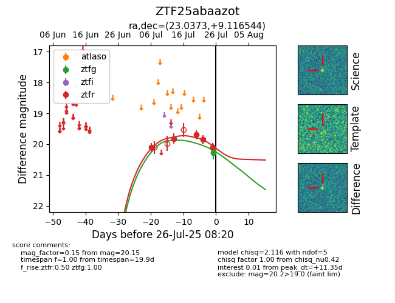

Target ZTF25abaazot at 2025-07-26 08:20, see:
FINK: fink-portal.org/ZTF25abaazot
Lasair: lasair-ztf.lsst.ac.uk/objects/ZTF25abaazot
ALeRCE: alerce.online/object/ZTF25abaazot
alt names
ZTF25abaazot (ztf,fink)
coordinates:
equatorial (ra, dec) = (23.0373,+9.11654)
galactic (l, b) = (139.5615,-52.43578)
photometry
last ztfg=20.15, ztfr=20.10
2 ztfg, 5 ztfr detections
